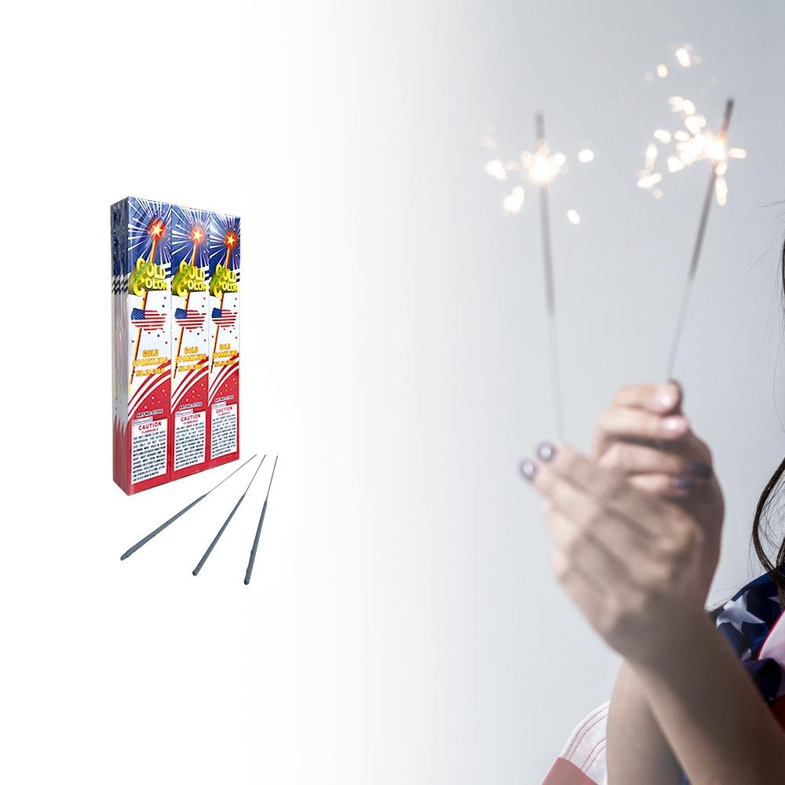

Sparklers
Sparkerls Recipe
This little magical stick of light use to be considered
a wizard stick now you can harness the power of this incredible
magic
Ingredients
- 300 grams (11 oz) of potassium chlorate
- 60 grams (2.1 oz) of aluminum files or shavings
- 2 grams (0.071 oz) of charcoal
- 1 teaspoon (4.9 ml) of dextrin
Steps
- Obtain the Ingredients above
- Grab a small pale to mix
- Mix all Ingredients into the pale
- Apply fire randomly